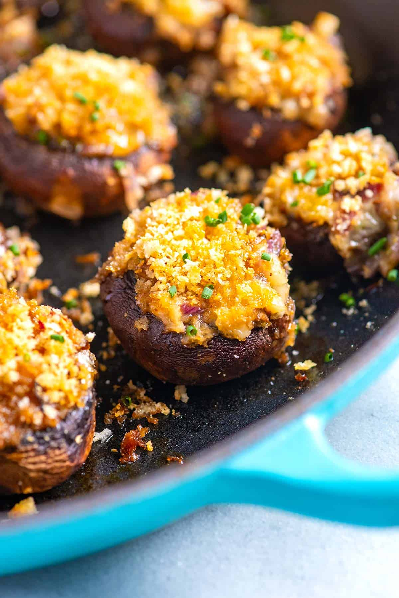

-
Caprese Salad

Fresh tomatoes, mozzarella, and basil drizzled with balsamic glaze.
-
Grilled Salmon

Seasoned salmon fillet grilled and finished with lemon-butter sauce and seasonal greens.
-
Stuffed Mushrooms
Button mushrooms filled with a savory blend of cheese, herbs, and breadcrumbs, baked until golden.